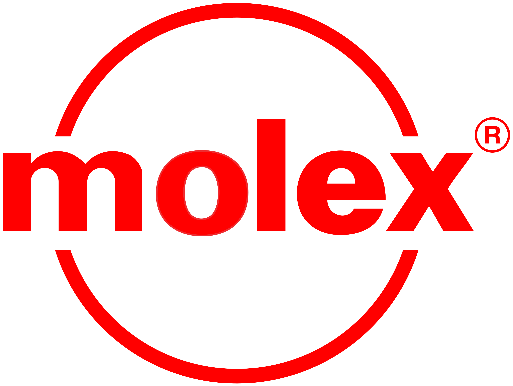
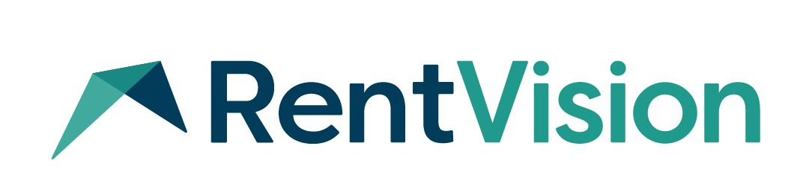

Software Engineer Intern
Federal Reserve Bank of Kansas City
May 2023 - August 2023;
July 2024
Over the summer of 2023, I interned at the Federal Reserve Bank of Kansas City. While I was here, I worked on
a project for the human resources center from start to finish using a technology no one else at the Fed had experience
with. This project was a low-code no-code solution due to the time restriction of getting past the security restrictions.
I worked closely with another intern on this project and together we followed Agile methodology, learned lots about
the design process and UI/UX design. We worked closely with our stakeholders and created a user guide for future maintence.

Software Engineer Intern
Molex
August 2022 - May 2023;
August 2023 - May 2024
I am currently an intern at Molex and have been so for the entirity of my junior and senior year of college. At Molex,
update software using MVC, C# .NET, Javascript, SQL, HTML, CSS, jQuery, and Bootstrap to maintain and update legacy code.
Recently, I've been working on a lot of new development where I've been creating dashboards to help the warehouse workers
know what machines and tools need to worked on. I collaborate with other developers and stakeholders in the projects to
debug code and problem solve.

Software Engineer Intern
RentVision
May 2022 - August 2022
While I interned at RentVision, I worked on software updates and addressed bus using Java, React, HTML, CSS, Javascript,
SQL, and AWS. I worked in partnerships across multiple teams to maxmize productivity and followed Agile and Scrum methodology.